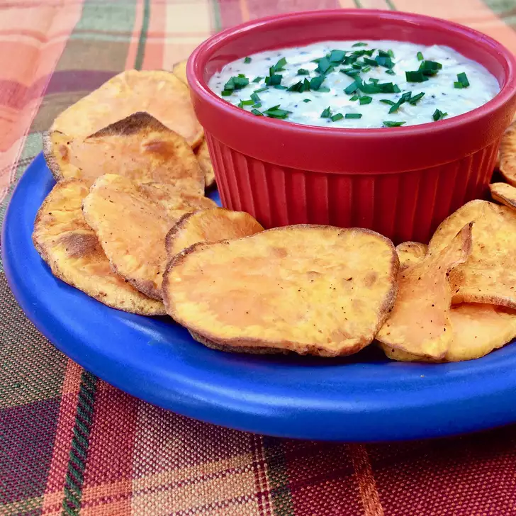

Air Fryer Sweet Potato Fries

Description
Sweet potato chips are prepared in no time in the air fryer. They turn out wonderfully crispy and delicious. Serve straight out of the air fryer with your favorite dip or sandwich.
Ingredients
- 1 teaspoon avocado oil
- 1 medium sweet potato, peeled and sliced crossways into 1/8-inch slices
- ½ teaspoon Creole seasoning, or to taste
Steps
- Preheat air fryer to 400 degrees F (200 degrees C).
- Place sweet potato slices in a large bowl. Stir in avocado oil, evenly coating each piece. Add Creole seasoning, stirring to combine. Place slices in a thin layer on the bottom of the air fryer basket.
- Cook in the preheated air fryer for 7 minutes. Shake slices and turn to allow for even cooking. Continue cooking until desired crispness is achieved, about 6 more minutes. Transfer potato slices to a rack and allow to cool.